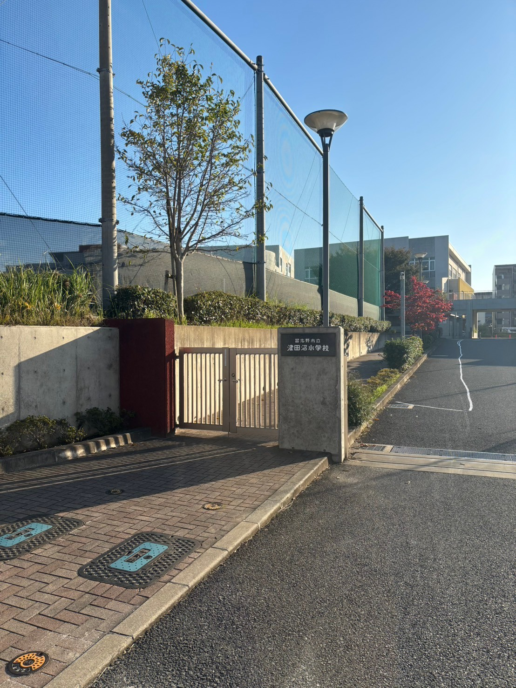
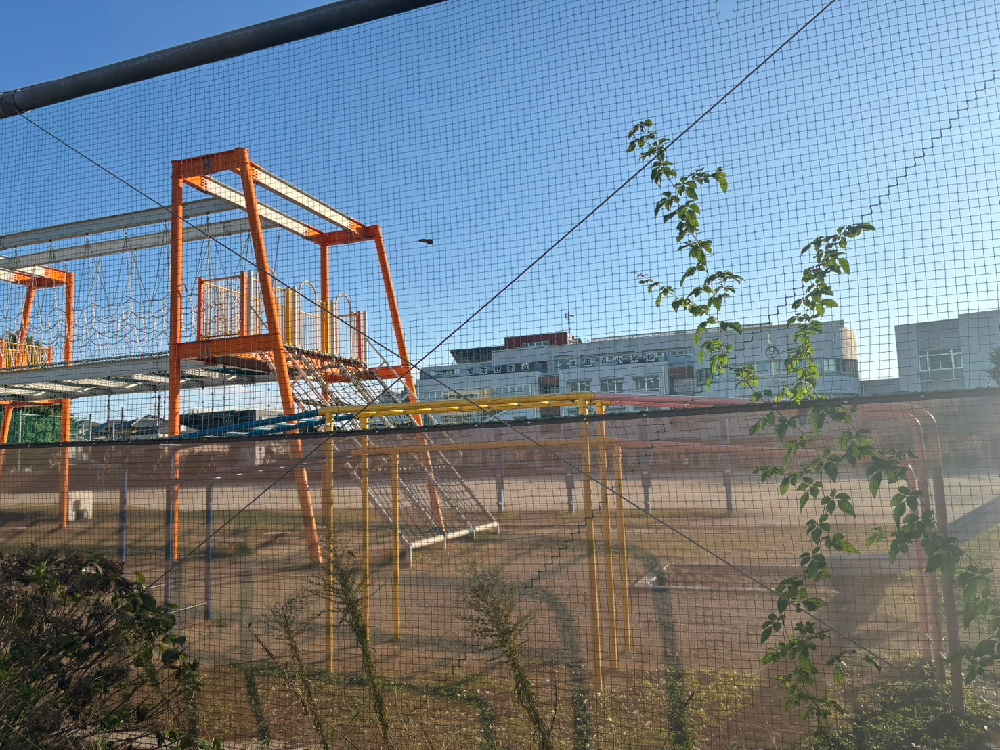
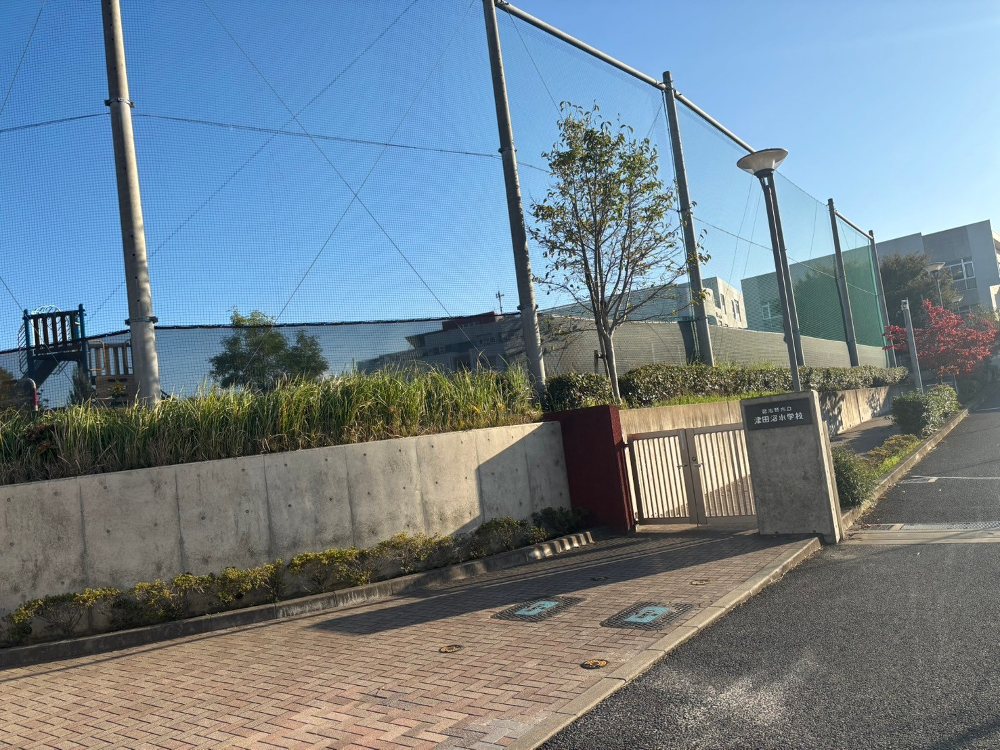

そらまめ保育園

そらまめ保育園は、駅のすぐ目の前にあるビルの中に入っている保育園です。駅前にあるので通勤がてらに子供を預けることができます。ビルの1つの階がすべて保育園になっているので関係者以外の人は入りずらく、セキュリティの面でも安心できます。
所在地: 千葉県習志野市谷津7丁目8-1
津田沼エリアのおすすめ保育園と小学校をご紹介します。

そらまめ保育園は、駅のすぐ目の前にあるビルの中に入っている保育園です。駅前にあるので通勤がてらに子供を預けることができます。ビルの1つの階がすべて保育園になっているので関係者以外の人は入りずらく、セキュリティの面でも安心できます。
所在地: 千葉県習志野市谷津7丁目8-1

サンライズキッズ保育園では、英語教育とバイリンガルスタッフによる教育を行い、国際的な視野を持つ子供たちの育成に力を入れています。
所在地: 千葉県習志野市津田沼4丁目11-11

津田沼小学校は、地域に根ざした公立小学校で、子供たちが協力し合う力や自主性を育む教育に力を入れています。充実した施設と熱心な教師陣が特徴です。
所在地: 千葉県習志野市津田沼4丁目5-2